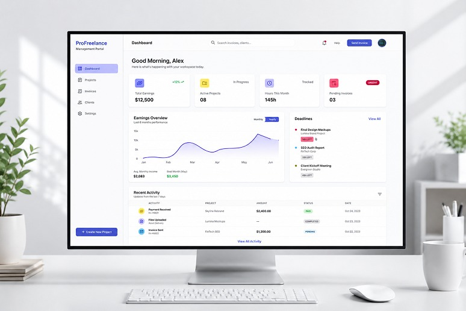
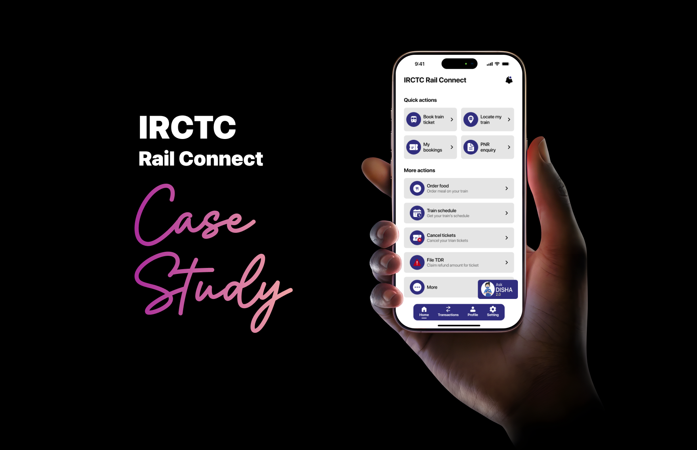
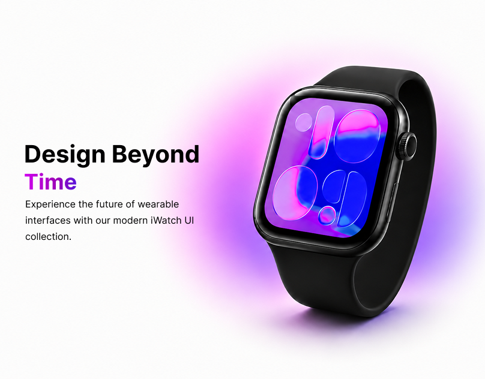

Selected Work
Case Studies
Projects that shaped my design thinking

Profreelance Management Portal
A comprehensive SaaS dashboard that helps freelancers manage invoices, deadlines, and earnings in one intuitive workspace, so they can focus on the work they’re paid to do.

IRCTC Rail Connect — Redesign
Redesigned the IRCTC Rail Connect app to simplify ticket booking and reduce friction. Analyzed real user reviews to uncover pain points, then developed clearer interaction flows and improved interface guidance.

Shewhead — Shoe Shopping App
Designed a mobile e-commerce shoe app focused on improving product discovery and seamless purchasing. Conducted user research, built information architecture, and created interactive prototypes with strong visual hierarchy.

iwatch Ui Design
Experience the future of wearable interfaces with our modern iWatch UI collection. Crafted with precision to deliver elegant, intuitive, and seamless user experiences.Clean layouts, smooth interactions, and pixel-perfect details in every component.